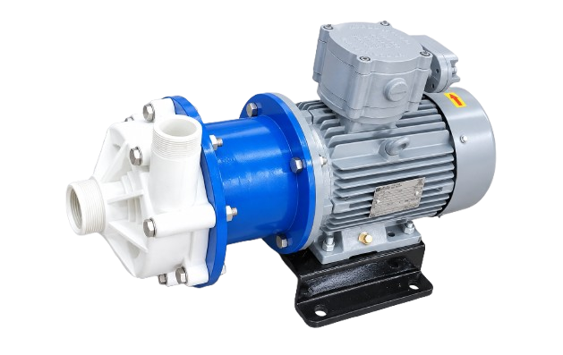

Horizontal single-stage seal-less centrifugal magnetic drive pump designed for reliable handling of acids, alkalis, chemicals, corrosive liquids and demanding industrial process fluids.

The AMTMD Series Magnetic Drive Polypropylene Pump is a horizontal single-stage seal-less centrifugal magnetic drive pump developed for demanding chemical, corrosive and industrial process applications.
Unlike conventional mechanically sealed pump arrangements, the magnetic drive design transfers motor power to the impeller through a magnetic coupling. This makes the AMTMD Series a suitable solution for applications where reducing conventional shaft-seal related concerns is important.
The AMTMD Series is available in Polypropylene, PVDF and UHMWPE liquid-path material options, allowing the pump to be selected according to chemical compatibility, temperature and process requirements.
The AMTMD Series is designed as a horizontal single-stage seal-less centrifugal magnetic drive pump for applications where chemical resistance and reliable process liquid handling are important.
Its magnetic coupling design provides a sealed liquid handling arrangement without a conventional rotating shaft seal in the liquid path. The pump can therefore be considered for demanding chemical transfer and corrosive liquid applications.
The following operating range is based on the AMTMD Series product brochure. Actual pump selection should be confirmed against the required duty point and application.
| Parameter | AMTMD Series |
|---|---|
| Pump Type | Horizontal Single-Stage Seal-Less Centrifugal Magnetic Drive Pump |
| Drive Type | Magnetic Drive |
| Capacity | Up to 100 m³/hr |
| Total Delivery Head | Up to 60 m |
| Pump Size | DN15–100 mm |
| Speed – 50 Hz | 1440 / 2880 RPM |
| Speed – 60 Hz | 1750 / 3500 RPM |
| Maximum Temperature | Up to 120°C |
The AMTMD Series includes multiple pump models covering different process flow and head requirements. Final model selection should be confirmed against the actual duty point.
Different liquid-path materials are available to suit chemical compatibility and operating conditions.
| Material | Application / Advantage |
|---|---|
| Polypropylene | Suitable for many chemical, acid, alkali and water treatment applications. |
| PVDF | High chemical resistance for demanding corrosive process applications. |
| UHMWPE | Suitable for selected chemical and process liquid handling requirements. |
The AMTMD Series uses magnetic coupling technology to transmit motor power to the pump impeller. The liquid path is separated from the motor drive arrangement, eliminating the need for a conventional rotating shaft seal within the liquid path.
Motor torque is transmitted through magnetic coupling to rotate the impeller without a conventional shaft seal.
The design separates the pump liquid chamber from the motor drive arrangement, making it suitable for many demanding chemical applications.
Suitable for compatible acids, alkalis, chemicals and corrosive process liquids when correctly selected.
Select the appropriate pump material and model based on liquid chemistry, concentration, temperature, flow rate, head and other operating conditions.
Discuss Your Application →Material selection should be based on the chemical, operating temperature and actual process conditions. The following ranges are based on the AMTMD product brochure.
Designed for demanding chemical and industrial process applications where corrosion resistance and seal-less pump construction are important.
Magnetic coupling transfers motor power to the impeller without a conventional rotating shaft seal in the liquid path.
Polypropylene, PVDF and UHMWPE material options allow selection according to chemical compatibility and process requirements.
Designed for acids, alkalis, cleaning chemicals, water treatment chemicals and other compatible corrosive process liquids.
Suitable for chemical, pharmaceutical, cosmetic, food-related chemical and industrial fluid handling applications.
Suitable for a broad range of chemical, corrosive and industrial process liquid handling applications.
Transfer of compatible acids and corrosive liquids in chemical and industrial process plants.
Suitable for compatible alkaline and caustic chemical handling applications.
Designed for chemical processing and corrosive liquid transfer applications.
Suitable for water treatment chemicals and compatible process liquid transfer.
Chemical and process liquid applications in pharmaceutical industries.
Suitable for compatible low-viscosity chemicals and process fluids.
Chemical and cleaning process applications where suitable material compatibility is required.
Transfer of compatible cleaning and industrial process chemicals.
Suitable for compatible sodium hydroxide transfer applications.
Chemical transfer applications requiring suitable corrosion-resistant pump materials.
Compatible chemical transfer applications with appropriate material selection.
Suitable for selected heat transfer liquid applications according to material compatibility.
Magnetic coupling technology eliminates the need for a conventional rotating shaft seal within the liquid path.
PP, PVDF and UHMWPE options provide flexibility for different chemical and corrosive liquid applications.
Suitable for acids, alkalis, cleaning chemicals, water treatment chemicals and industrial process liquids.
Different models and material options can be selected according to flow, head, temperature and liquid compatibility.
The AMTMD Series is a horizontal single-stage seal-less centrifugal magnetic drive pump designed for handling chemicals, acids, alkalis, corrosive liquids and industrial process fluids.
A magnetic drive polypropylene pump uses magnetic coupling to transfer motor power to the impeller. This provides a seal-less liquid path and makes the pump suitable for many chemical and corrosive liquid applications.
The magnetic drive arrangement separates the motor drive from the pumped liquid and does not require a conventional rotating shaft seal in the liquid path. This design is useful for many demanding chemical handling applications.
AMTMD Series pumps are available with polypropylene, PVDF and UHMWPE liquid-path material options depending on the application and chemical compatibility.
The AMTMD Series has a capacity of up to 100 m³/hr, depending on the selected model, operating conditions and required duty point.
Magnetic drive PP pumps are used in chemical, pharmaceutical, cosmetic, water treatment, cleaning chemical and other industrial process applications involving compatible corrosive or chemical liquids.
Pump selection normally requires liquid name and concentration, required flow rate, head, temperature, specific gravity, viscosity and suction conditions. Material compatibility should also be confirmed.
Share your liquid, flow rate, head, temperature and application requirements and our team can help you identify a suitable AMTMD Series configuration.